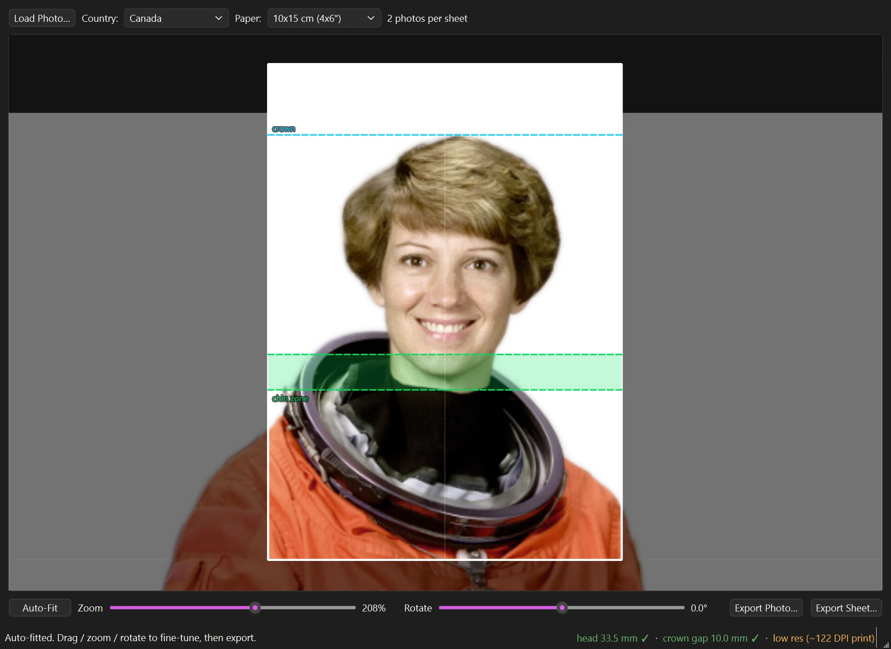
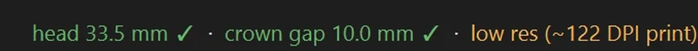
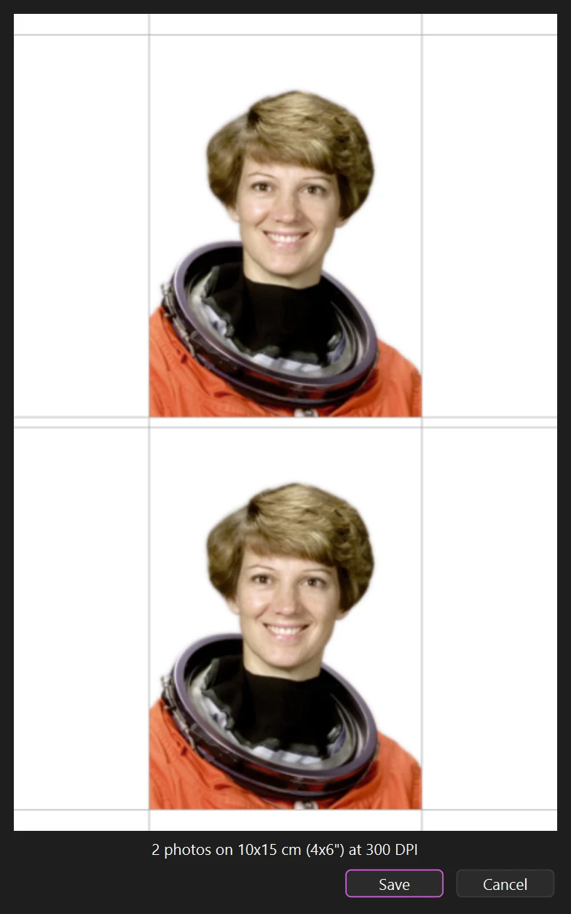

Passport photos that pass.
A free, open-source Windows app that turns any photo into a print-ready sheet matched to your country's official rules.

From any photo to a printed sheet
Load a picture, pick a country, and the app handles the technical part. Fine-tune with guides that show what the spec wants.
Load
Open a file, drag one in, or paste from the clipboard with Ctrl+V.
Auto-fit
Face detection levels the eye line, removes the background, and scales the head to the country's required size.
Export
Preview the exact sheet before saving at 300 DPI, or export a single 600 DPI photo for online forms.
A live answer to "will this be accepted?"
As you drag and zoom, the readout re-measures head height, crown gap, and centering against the selected country, and warns when print resolution drops too low.

Built for the printer and the portal

Print-ready sheets
Tiled for 10x15, 13x18, A4, or US Letter paper, with cut lines between photos.
Nothing leaves your computer
Face detection and background removal run locally with bundled models. No uploads, no account, no service that sees your face.
One photo at 600 DPI
Online application portals want a single file at exact pixel dimensions. Export one photo instead of a sheet.
14 countries built in
Every spec lives in a plain requirements.json file: head size band, crown margin, background color. Add a country or adjust one in a text editor, no rebuild needed. Verify against the official source before you print.
Skip the photo booth.
Windows 10 or 11, 64-bit. 287 MB zip with the detection models included. Unzip and run.